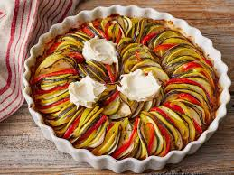

Home
Disney's Ratatouille

Ingredients
- 1 (6 ounce) can tomato paste
- ½ onion, chopped
- ¼ cup minced garlic
- ¾ cup water
- 4 tablespoons olive oil, divided
- salt and ground black pepper to taste
- 1 small eggplant, trimmed and very thinly sliced
- 1 zucchini, trimmed and very thinly sliced
- 1 yellow squash, trimmed and very thinly sliced
- 1 red bell pepper, cored and very thinly sliced
- 1 yellow bell pepper, cored and very thinly sliced
- 1 teaspoon fresh thyme leaves, or to taste
- 3 tablespoons mascarpone cheese (Optional)
Steps
-
Step 1
Preheat the oven to 375 degrees F (190 degrees C).
-
Step 2
Spread tomato paste onto the bottom of a 10-inch square baking dish. Sprinkle with onion and garlic. Stir in water and 1 tablespoon olive oil until thoroughly combined. Season with salt and pepper.
-
Step 3
Arrange alternating slices of eggplant, zucchini, yellow squash, red bell pepper, and yellow bell pepper, starting at the outer edge of the dish and working concentrically towards the center. Overlap slices a little to display colors.
-
Step 4
Drizzle vegetables with remaining 3 tablespoons olive oil; season with salt and pepper. Sprinkle with thyme leaves. Cover vegetables with a piece of parchment paper cut to fit inside.
-
Step 5
Bake in the preheated oven until vegetables are roasted and tender, about 45 minutes. Serve with dollops of mascarpone cheese if desired.